장기요양 가이드
대전·유성 방문요양 신청방법과 2026년 비용 안내
부모님 거동이 예전 같지 않거나 기억력이 부쩍 떨어지셔서 대전 방문요양이나 유성 방문요양을 알아보고 계신가요? 처음 장기요양제도를 접하시는 보호자분들이 가장 궁금해하시는 신청 절차부터 등급별 월 한도액, 하루 이용 시간별 본인부담금(15%·9%·6%)까지 한눈에 이해하실 수 있도록 정리해 드립니다.
어려운 장기요양보험 제도와 가정 내 돌봄 소통 방법을 알기 쉽게 정리해 드립니다.

부모님 거동이 예전 같지 않거나 기억력이 부쩍 떨어지셔서 대전 방문요양이나 유성 방문요양을 알아보고 계신가요? 처음 장기요양제도를 접하시는 보호자분들이 가장 궁금해하시는 신청 절차부터 등급별 월 한도액, 하루 이용 시간별 본인부담금(15%·9%·6%)까지 한눈에 이해하실 수 있도록 정리해 드립니다.
부모님께서 부쩍 같은 질문을 반복하시거나 다리에 힘이 빠져 혼자 외출하시기 힘들어하실 때, 어디서부터 돌봄 준비를 시작해야 할지 막막하신가요? 대전·유성구 보호자분들을 위해 노인장기요양등급 신청 자격부터 국민건강보험공단 방문조사 준비 요령, 판정 후 방문요양 시작까지 전 과정을 차근차근 짚어드립니다.
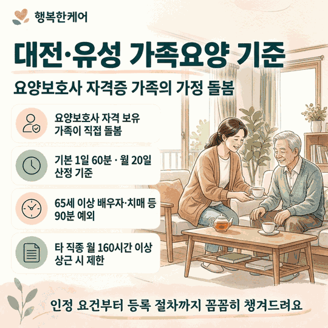
요양보호사 자격증을 취득한 자녀나 배우자, 며느리, 사위가 집에서 부모님을 직접 돌보고 계신가요? 대전 가족요양과 유성구 가족요양 제도를 활용하시면 가족이 직접 어르신을 케어하면서 급여를 받으실 수 있습니다. 2026년 기준 가족요양 인정 조건과 60분·90분 기준, 일반 방문요양과의 병행 가능 여부까지 꼼꼼히 안내해 드립니다.
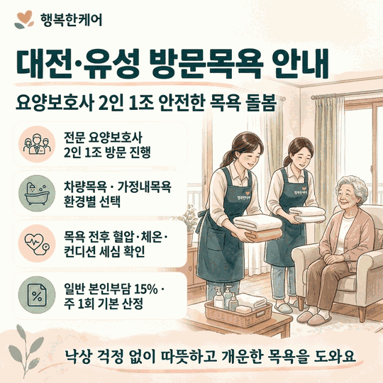
거동이 불편하신 부모님을 집 욕실에서 씻겨드리다 보면 미끄러져 다치실까 봐 늘 마음이 조마조마하고 보호자분의 허리와 손목에도 무리가 가기 쉽습니다. 2인 1조 전문 요양보호사가 어르신 댁으로 찾아가 안전하고 따뜻하게 목욕을 도와드리는 대전 방문목욕·유성 방문목욕 서비스의 이용 방법과 2026년 비용을 상세히 정리해 드립니다.

어르신 댁에 필요한 물건을 보호자가 사비로 다 마련하고 계신 경우가 많습니다. 장기요양등급이 있으시면 상당 부분을 복지용구 급여로 지원받으실 수 있는데 모르고 지나치십니다. 대전 유성구 행복한케어가 대상과 품목, 한도를 정리했습니다.
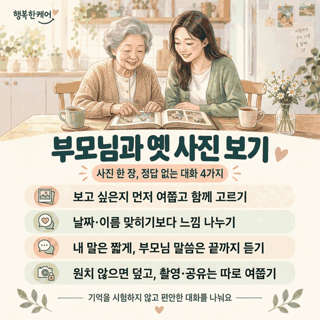
오래된 사진 상자를 열면 어디서 찍었는지, 누가 함께 있었는지 궁금해집니다. 부모님께 하나씩 여쭤보다 보면 어느새 대화가 문제를 맞히는 시간처럼 느껴질 수도 있습니다. 사진을 함께 보는 목적은 모든 날짜와 이름을 알아내는 데 있지 않아도 괜찮습니다. 부모님이 지금 나누고 싶은 이야기를 듣거나, 말없이 한 장을 함께 바라보는 시간도 될 수 있습니다. 오늘은 가족이 집에서 옛 사진을 볼 때 생각해 볼 대화 방법을 정리했습니다. 치료나 기억력 평가를 위한 활동이 아니라 서로의 취향과 마음을 존중하는 일상적인 제안입니다. 대전 유성구 행복한케어에서 부모님과 옛 사진을 보며 편안하게 이야기 나누는 방법을 정리했습니다.
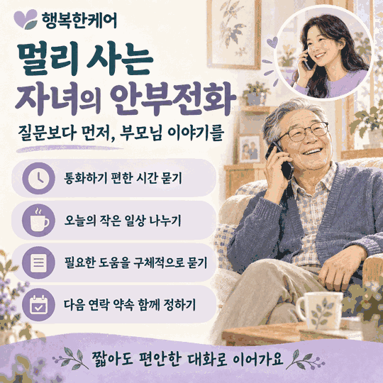
방문요양을 처음 이용하시는 보호자분들이 가장 많이 물으시는 것이 요양보호사 하는 일의 범위입니다. 어디까지 부탁드려도 되는지 모르셔서 서로 눈치를 보다 관계가 어색해지는 경우도 있습니다. 대전 유성구 행복한케어가 급여 범위 안에 들어가는 일과 그렇지 않은 일을 정리했습니다.
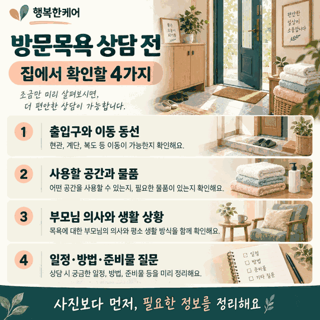
방문목욕을 알아보시는 분들이 가장 먼저 물으시는 것이 방문목욕 비용과 이용 횟수입니다. 어르신을 집에서 안전하게 씻겨 드리는 일이 쉽지 않아 알아보시는 경우가 많은데, 기준을 모르면 계획을 세우기 어렵습니다. 대전 유성구 행복한케어가 산정 구조와 이용 기준을 정리했습니다.
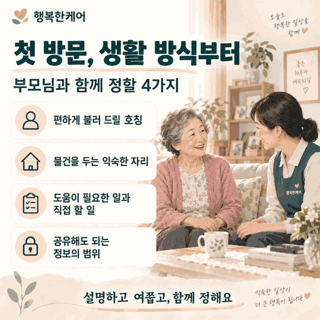
방문요양 비용 본인부담금이 한 달에 얼마나 나오는지는 상담 전화에서 가장 자주 나오는 질문입니다. 그런데 인터넷에서 금액만 검색하면 오히려 헷갈립니다. 같은 등급이어도 사람마다 내는 돈이 다르기 때문입니다. 금액을 외우는 것보다 계산되는 구조를 아는 편이 훨씬 빠릅니다. 구조는 생각보다 단순해서, 한 번 알아두시면 어르신 상황에 맞춰 직접 가늠하실 수 있습니다. 이 글에서는 급여비용이 정해지는 기준, 본인부담률, 가산이 붙는 경우, 한도액을 넘겼을 때까지 순서대로 정리했습니다.
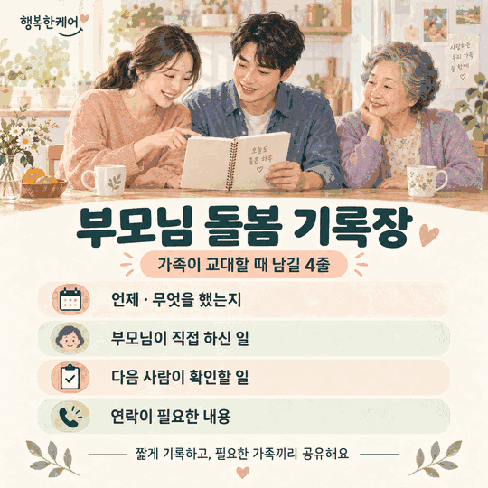
가족요양을 알아보시는 분들이 가장 먼저 확인하셔야 할 것이 인정 시간입니다. 같은 가족요양이라도 하루 60분이 인정되는 경우와 90분이 인정되는 경우가 나뉘고, 인정 일수까지 달라지기 때문입니다. 가족요양 조건이 정확히 무엇인지, 어떤 경우에 90분이 되는지 대전 유성구 행복한케어가 정리했습니다.
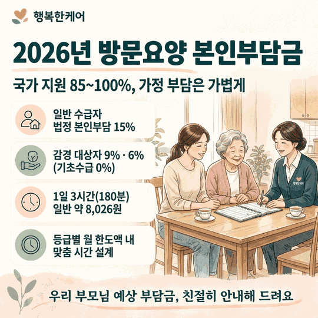
장기요양등급 기준이 무엇인지 알고 계시면 방문조사를 준비하실 때 훨씬 마음이 놓입니다. 등급은 조사원의 인상이나 사정으로 정해지는 것이 아니라 점수로 산출됩니다. 어떤 항목을 보고 어떻게 점수가 되는지, 점수 몇 점이 몇 등급인지 대전 유성구 행복한케어가 정리했습니다.
장기요양등급 5등급을 받으시면 하루 몇 시간을 어떻게 이용할 수 있는지부터 궁금하실 겁니다. 장기요양등급 5등급은 다른 등급과 이용 방식이 조금 다릅니다. 방문요양을 이용하시더라도 일반 방문요양이 아니라 인지활동형으로 진행되기 때문입니다. 대전 유성구 행복한케어가 5등급의 이용 구조를 정리했습니다.
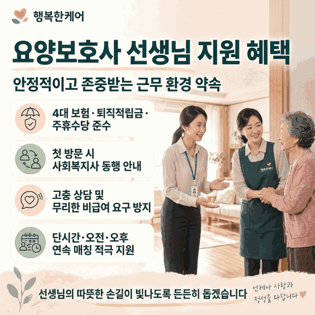
장기요양등급 4등급을 받으시면 무엇을 이용할 수 있는지부터 정리가 필요합니다. 4등급은 등급을 받으신 분들 중 가장 많은 비중을 차지하는 등급인데, 요양원 입소에 관해 잘못 알고 계신 경우가 많습니다. 대전 유성구 행복한케어가 장기요양등급 4등급으로 이용 가능한 급여와 시설급여 예외를 정리했습니다.
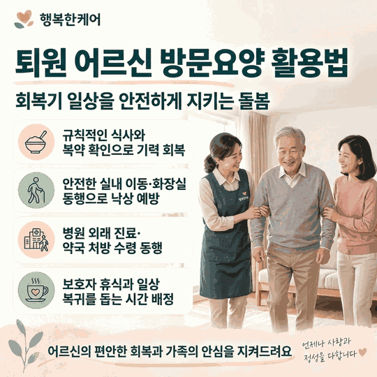
장기요양등급을 신청하시면 공단에서 의사소견서를 내라는 안내를 받으십니다. 이때 장기요양 의사소견서 비용이 얼마인지, 어느 병원에서 받아야 하는지 몰라 헤매시는 분들이 많습니다. 대전 유성구 행복한케어가 발급 절차와 부담 구조를 정리했습니다.
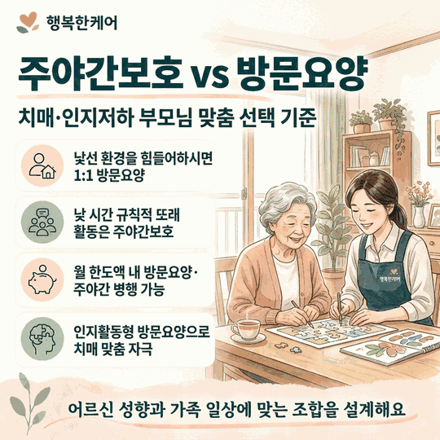
부모님께서 치매 진단을 받으시고 장기요양등급을 신청하셨는데 '인지지원등급' 판정이 나와서 방문요양을 이용하지 못해 당황하셨나요? 왜 인지지원등급은 가정 방문요양이 제외되는지, 그리고 인지지원등급으로 이용하실 수 있는 급여와 5등급 변경신청 기준은 무엇인지 명쾌하게 정리해 드립니다.
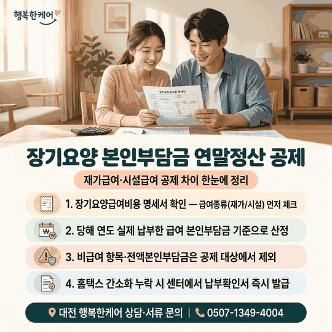
부모님을 위해 매달 지출하는 방문요양 본인부담금이 연말정산에서 공제 대상이 되는지 궁금해하시는 직장인 자녀분들이 많습니다. 노인장기요양보험법에 따라 실제 지출한 재가급여 본인부담금은 요건을 충족할 경우 의료비 세액공제 혜택을 받으실 수 있습니다. 방문요양비용 연말정산 공제 조건과 장기요양급여비 납부확인서 발급 절차를 알기 쉽게 정리해 드립니다.
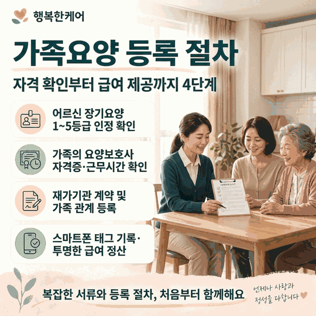
장기요양등급 판정을 마치고 드디어 요양보호사 선생님이 어르신 댁으로 처음 오시는 방문요양 첫날에는 어르신도 보호자분도 은근히 긴장되기 마련입니다. 낯선 분이 집 안에 들어오시는 첫날의 어색함을 줄이고 첫 단추를 편안하게 끼울 수 있도록, 방문요양 시작 전 미리 챙겨두시면 좋은 실전 준비 사항 8가지를 상세히 정리해 드립니다.
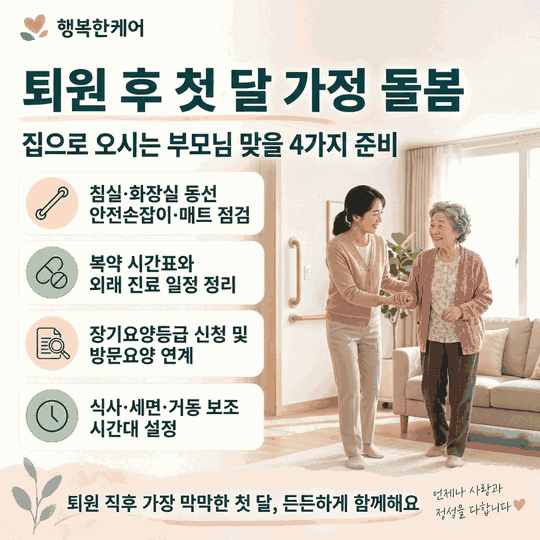
방문요양을 시작했는데 부모님과 요양보호사 선생님의 성향이나 생활 습관이 조금 맞지 않아 고민하고 계신가요? 선생님께 직접 말씀드리자니 어색해질까 봐 망설여지는 보호자분들을 위해, 센터 사회복지사를 통한 매끄러운 조율 방법과 부담 없는 선생님 변경 절차를 안내해 드립니다.
고관절 골절 수술이나 뇌졸중, 폐렴 등으로 대학병원이나 재활병원에 입원하셨던 부모님이 퇴원을 앞두시면 가족분들의 마음이 가장 바빠집니다. 병원에서는 간병인이나 간호 인력이 곁에 있었지만 집으로 모시는 순간 식사, 복약, 화장실 이동, 낙상 예방을 가족이 온전히 감당해야 하기 때문입니다. 대전 퇴원 후 부모님 방문요양 준비 순서와 회복기 가정 돌봄 활용법을 상세히 정리해 드립니다.
부모님께서 방금 드신 식사를 잊으시거나 약 챙겨드시는 것을 자꾸 건너뛰실 때, 혹은 가스불을 켜두시고 깜빡하시는 일이 잦아질 때 자녀분들의 걱정은 깊어만 갑니다. 초기 치매나 경도인지장애 진단을 받으신 어르신께 꼭 맞는 대전 치매 부모님 방문요양(5등급 인지활동형 방문요양)과 주야간보호센터 병행 활용법을 알기 쉽게 안내해 드립니다.
요양보호사 자격증을 취득하셨거나 경력이 있으신 선생님들께서 가장 중요하게 생각하시는 것은 집에서 가까운 근무지와 내 생활 리듬에 맞는 근무 시간, 그리고 선생님을 존중해 주는 센터 분위기입니다. 대전 유성구 요양보호사 구인 채용 안내와 함께 오전·오후 파트타임 맞춤 매칭 및 가족요양 등록 절차를 상세히 안내해 드립니다.
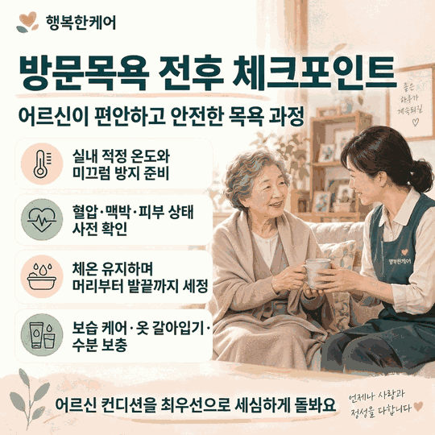
뇌졸중 편마비나 파킨슨병, 고관절 수술 후유증, 중증 치매 등으로 거동이 불편하신 부모님을 가정 욕실에서 씻겨드리는 일은 보호자분께 가장 큰 육체적·심리적 부담입니다. 물기가 있는 욕실에서 자칫 미끄러지기라도 하면 큰 부상으로 이어질 수 있기 때문입니다. 숙련된 요양보호사 2명이 댁으로 찾아가는 대전 유성 방문목욕 신청 방법과 안전한 입욕 과정을 상세히 안내해 드립니다.
대전 유성구 노은동, 지족동, 반석동, 죽동 아파트 단지와 주택가에 거주하시는 부모님의 거동이 예전 같지 않거나 식사·복약을 챙기기 어려워 걱정하시는 자녀분들이 많습니다. 정든 내 집을 떠나지 않고도 국가 지원을 받아 전문 요양보호사 선생님의 돌봄을 받으실 수 있는 대전 유성구 방문요양 신청 절차와 2026년 본인부담금 기준을 자세히 안내해 드립니다.
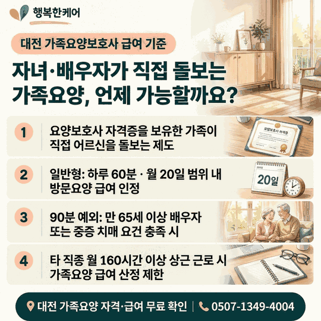
요양보호사 자격증을 취득하신 배우자나 자녀, 며느리, 사위 등 가족분이 집에서 어르신을 직접 돌보시며 급여를 받으실 수 있는 제도가 가족요양입니다. 다만 일반 방문요양과 달리 하루 인정 시간(60분·90분)과 월 일수, 타직장 근로시간 기준이 엄격하게 정해져 있습니다. 대전 가족요양 이용 조건과 60분·90분 급여 산정 기준을 명확하게 정리해 드립니다.
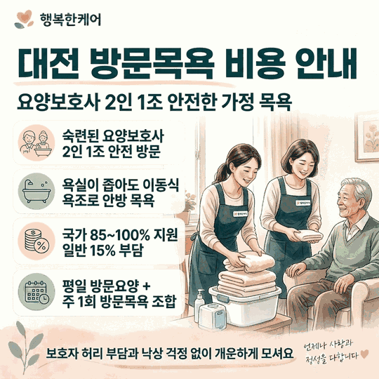
뇌졸중 편마비나 고관절 골절, 파킨슨병, 중증 치매 등으로 거동이 불편하신 부모님을 집 욕실에서 가족 혼자 씻겨드리는 일은 낙상 위험이 크고 보호자 허리에도 큰 무리가 갑니다. 숙련된 요양보호사 2명이 한 조로 가정을 방문해 안전하게 목욕을 도와드리는 대전 방문목욕 비용과 2026년 본인부담금, 진행 순서를 상세히 정리해 드립니다.

대전 유성구 봉명동과 장대동, 구암동, 원신흥동 일대에서 연로하신 부모님을 모시거나 가까이 거주하며 돌봄을 챙기시는 자녀분들이 많습니다. 부모님께서 예전보다 식사량이 줄고 무릎이나 허리 통증으로 외출을 힘들어하실 때, 정든 집에서 편안하게 전문 요양보호사 선생님의 도움을 받으실 수 있는 대전 유성구 봉명동 방문요양 신청 절차와 첫 달 돌봄 계획을 상세히 안내해 드립니다.
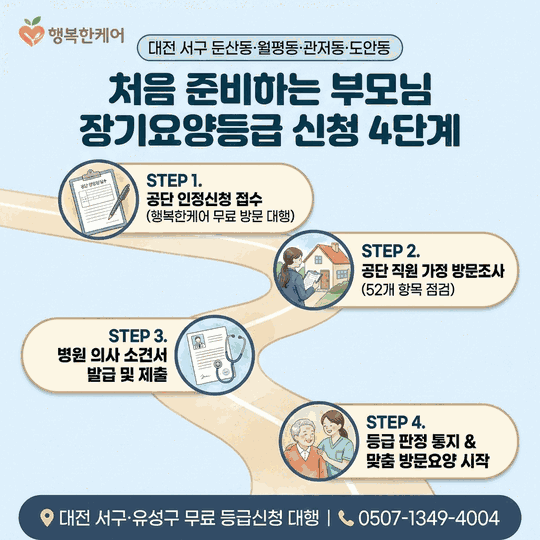
대전 서구 둔산동, 월평동, 갈마동, 관저동, 가수원동, 도안동에 거주하시는 부모님의 기억력이나 보행 능력이 예전 같지 않아 장기요양등급을 알아보시는 보호자분들이 많습니다. 처음 접하면 복잡하게 느껴지는 노인장기요양보험 인정신청 절차부터 공단 직원의 가정 방문조사 때 꼭 챙겨야 할 준비 사항까지, 대전 서구 장기요양등급 신청 핵심 가이드를 정리해 드립니다.
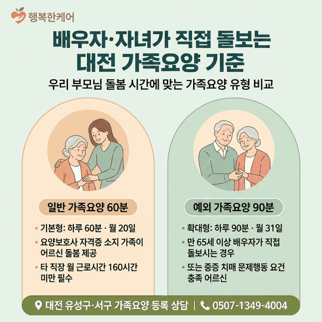
요양보호사 자격증을 취득하신 배우자나 자녀, 며느리, 사위 등 가족분이 어르신을 직접 돌보며 급여를 받으실 수 있는 가족요양 제도에 대해 문의하시는 대전 유성구·서구 가정들이 꾸준히 늘고 있습니다. 하루 60분 기본 인정 기준과 90분 예외 요건, 타 직장 월 160시간 기준, 그리고 일반 방문요양이나 방문목욕과의 병행 방법까지 대전 배우자 자녀 가족요양 핵심 기준을 명확히 안내해 드립니다.
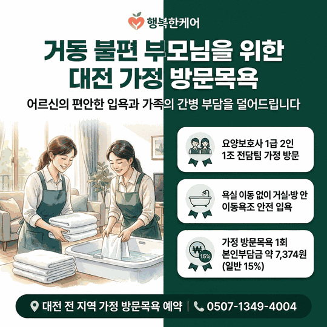
뇌졸중 편마비나 파킨슨병, 고관절 골절, 중증 치매 등으로 거동이 불편하신 부모님을 집 욕실에서 씻겨드리는 일은 자녀나 배우자에게 가장 큰 체력적 부담이자 낙상 사고의 위험이 따르는 일입니다. 요양보호사 자격증을 가진 2인 1조 목욕 전문가가 어르신 댁으로 찾아가는 대전 가정 방문목욕 진행 절차와 2026년 본인부담금 기준을 자세히 안내해 드립니다.

대전 유성구 전민동, 관평동, 신성동, 죽동 연구단지와 아파트 단지에 거주하시면서 맞벌이 직장 생활로 낮 시간 홀로 계신 부모님을 걱정하시는 자녀분들이 많습니다. 출근해 있는 동안 부모님께서 제때 따뜻한 식사를 챙겨 드시는지, 처방약은 잊지 않으셨는지 늘 마음이 쓰이실 때 든든하게 도움을 받으실 수 있는 대전 유성구 전민동 방문요양 신청 절차와 3단계 안심 돌봄 시스템을 안내해 드립니다.
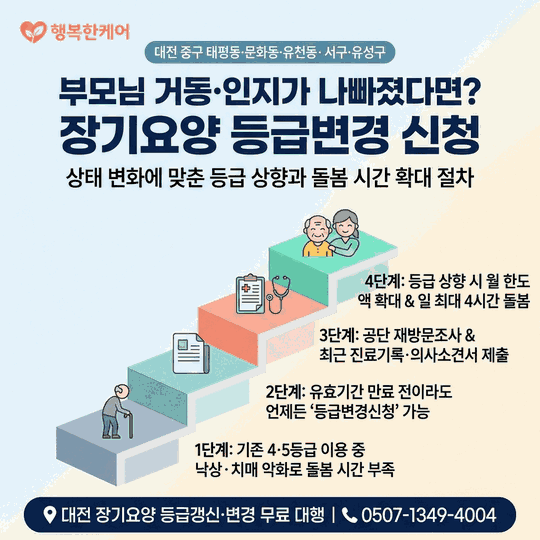
기존에 장기요양 4등급이나 5등급을 받아 방문요양을 이용하시던 부모님께서 최근 낙상 골절이나 치매 증상 악화로 거동과 인지 기능이 눈에 띄게 나빠지셨다면 등급 유효기간이 남아 있더라도 등급 상향을 위한 변경 신청을 하실 수 있습니다. 대전 중구 태평동, 문화동, 유천동, 오류동 및 서구·유성구 보호자분들을 위해 대전 장기요양 등급변경 신청 요건과 유효기간 만료 전 갱신 절차를 상세히 정리해 드립니다.
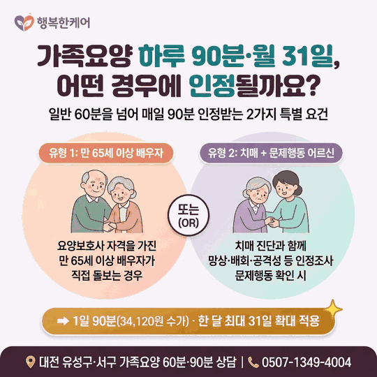
요양보호사 자격증을 가진 가족분이 어르신을 직접 돌보실 때 기본 인정 시간은 하루 60분(월 20일)이지만, 일정 요건을 충족하시면 하루 90분씩 한 달 내내(월 최대 31일) 급여를 인정받으실 수 있습니다. 대전 유성구·서구·중구에서 부모님이나 배우자를 돌보시는 가족요양보호사님들이 가장 많이 질문하시는 대전 치매 가족요양 90분 인정 요건과 급여 삭감을 막는 필수 주의사항을 명확히 안내해 드립니다.

아침저녁 기온 차가 커지는 환절기와 쌀쌀한 계절에는 어르신의 혈관 수축과 근육 경직으로 인해 가정 내 욕실 목욕 시 낙상이나 혈압 변화 위험이 더욱 커집니다. 차가운 욕실로 이동하지 않고 따뜻한 거실이나 안방에서 안전하게 입욕하실 수 있는 대전 어르신 가정 방문목욕 체온·보습 관리법과 복지용구 목욕의자·안전손잡이 연계 방법을 상세히 안내해 드립니다.
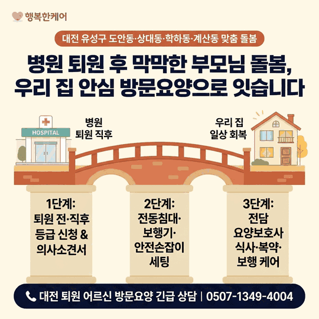
골절 수술이나 뇌혈관 질환, 폐렴 등으로 병원 입원 치료를 마치고 퇴원을 앞두신 부모님을 모시는 보호자분들은 집으로 돌아오신 뒤의 일상이 가장 막막하게 느껴지실 수 있습니다. 대전 유성구 도안동, 상대동, 학하동, 계산동 어르신 가정에서 퇴원 직후 낙상과 영양 불량을 예방하고 안전하게 일상을 회복하실 수 있도록 돕는 대전 퇴원 어르신 방문요양 신청 절차와 첫 한 달 집중 케어 계획을 상세히 안내해 드립니다.

대전 방문요양센터 및 재가장기요양기관 행복한케어입니다. 대전 대덕구 송촌동, 법동, 중리동, 오정동, 신탄진 일대에서 연로하신 부모님의 거동이나 기억력이 예전 같지 않아 장기요양 제도를 알아보시는 자녀분들이 많습니다. 처음 신청하실 때 가장 많이 헷갈려 하시는 대전 대덕구 장기요양등급 신청 4단계 나침반 절차와 병원 의사소견서 발급 비용을 아끼는 핵심 기준을 알기 쉽게 정리해 드립니다.
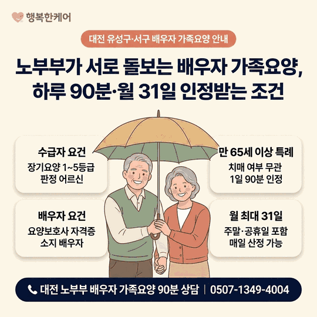
자녀들에게 짐이 되고 싶지 않다며 노부부 두 분이 서로 의지하며 살아가시는 가정에서, 한 분이 장기요양등급을 받으시고 건강하신 배우자분이 요양보호사 자격증을 취득해 직접 돌보시는 사례가 꾸준히 늘고 있습니다. 대전 유성구와 서구 노부부 가정을 위해 만 65세 이상 배우자에게만 적용되는 대전 배우자 가족요양 90분(월 최대 31일) 인정 요건과 2026년 급여·본인부담금 구조를 상세히 정리해 드립니다.
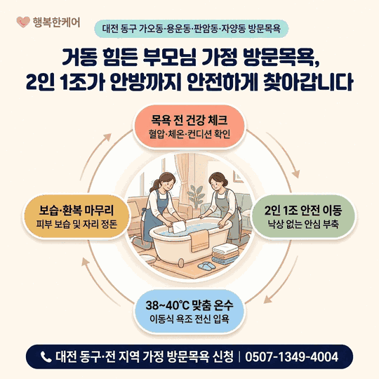
거동이 불편하시거나 뇌졸중·치매·관절 질환으로 가정 내 좁고 미끄러운 욕실에서 목욕하시기 어려운 부모님을 모실 때 가장 큰 고민이 바로 위생 관리입니다. 대전 동구 가오동, 용운동, 판암동, 자양동 및 대전 전 지역 어르신 가정의 안방과 거실로 2인 1조 요양보호사가 이동식 욕조를 가지고 찾아가는 대전 동구 방문목욕 신청 방법과 첫날 가정에서 챙기실 준비물을 상세히 안내해 드립니다.

대전 유성구 봉명동(봉명서로 21-17)에 위치한 국민건강보험공단 지정 재가요양센터 행복한케어입니다. 봉명동, 장대동, 구암동, 원신흥동, 상대동 일대에서 연로하신 부모님의 안전한 일상과 식사, 복약, 병원 동행을 돕는 봉명동 방문요양 맞춤 케어와 무료 등급신청 절차를 상세히 안내해 드립니다.

대전 서구 둔산동, 월평동, 갈마동, 탄방동, 가수원동, 관저동, 도마동 일대에서 거동이 불편하거나 인지 기능이 저하된 부모님을 모시는 보호자분들을 위해 대전 서구 방문요양 신청 절차와 2026년 장기요양 등급별 월 한도액·본인부담금 계산법을 알기 쉽게 정리해 드립니다.
대전 유성구 노은동, 지족동, 반석동, 죽동, 하기동 일대에서 요양보호사 자격증을 취득해 연로하신 부모님이나 배우자를 직접 돌보시는 가족분들을 위해 노은동 가족요양 하루 60분·90분 인정 요건과 2026년 급여·본인부담금 계산 기준을 상세히 정리해 드립니다.
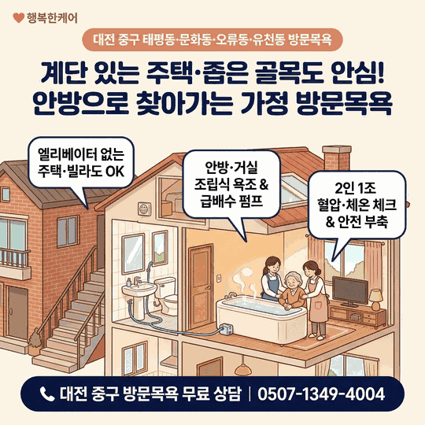
어르신의 다리 근력이 약해지거나 퇴원 후 보행이 불안정해지면 물기가 있는 가정 욕실에서 목욕을 도와드리는 일이 보호자분께 큰 걱정거리가 됩니다. 2인 1조 전문 요양보호사가 가정으로 찾아가는 대전 방문목욕 서비스의 실제 진행 과정과 2026년 본인부담금(15%) 기준을 알기 쉽게 정리해 드립니다.
![[대전 유성구 방문요양] 하루 3시간·4시간 요양보호사 선생님이 실제로 도와주시는 일은?](../assets/images/L028_01.png)
처음 부모님 방문요양을 알아보시는 보호자분들께서 가장 많이 물어보시는 질문이 바로 '하루 3시간 동안 요양보호사 선생님이 집에 오셔서 구체적으로 어떤 일을 도와주시나요?'입니다. 대전 유성구 방문요양 현장에서 실제로 이루어지는 시간대별 맞춤 돌봄 내용과 2026년 본인부담금 기준을 상세히 정리해 드립니다.
![[대전 장기요양등급 신청] 부모님 등급 신청부터 공단 방문조사까지 한 번에 준비하는 법 (2026)](../assets/images/L029_01.png)
부모님께서 예전보다 걸음이 부쩍 느려지시거나 같은 질문을 반복하셔서 돌봄 서비스를 알아보려 해도, 어디서부터 어떻게 장기요양등급을 신청해야 할지 막막해하시는 자녀분들이 많습니다. 2026년 기준 대전 장기요양등급 신청 자격부터 공단 방문조사, 의사소견서 제출까지 전 과정을 실패 없이 준비하는 방법을 정리해 드립니다.
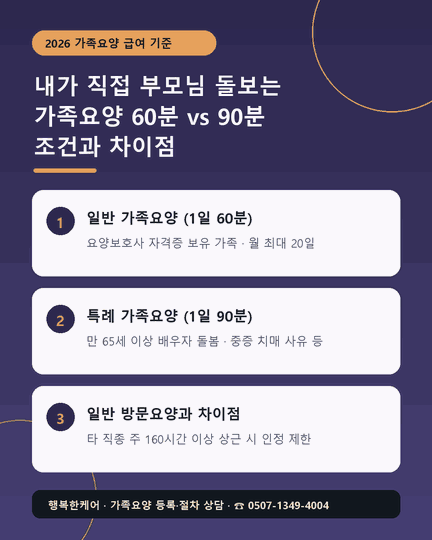
요양보호사 자격증을 취득하신 배우자나 자녀, 며느리, 사위 등 가족분이 어르신을 집에서 직접 돌보시면서 공단 급여를 받으실 수 있는 제도가 가족요양입니다. 2026년 기준 대전 가족요양 60분·90분 인정 조건과 월 예상 수령액, 타직장 근로시간 규정을 한눈에 보기 쉽게 정리해 드립니다.
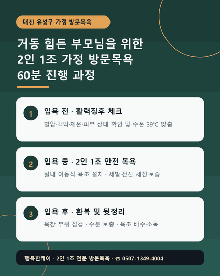
뇌졸중 편마비나 고관절 수술, 파킨슨병, 중증 치매 등으로 거동이 불편하신 어르신을 모시는 가정에서는 일주일에 한 번 목욕을 시켜드리는 일이 가장 큰 숙제입니다. 2인 1조 전문 요양보호사가 안방까지 찾아가는 대전 유성구 방문목욕의 실제 케어 과정과 2026년 본인부담금을 상세히 안내해 드립니다.
![[대전 방문요양] 2026년 장기요양 1~5등급 방문요양 비용(본인부담금 15%)과 신청절차 총정리](../assets/images/L032_01.png)
대전 전 지역(유성구·서구·중구·대덕구·동구) 어르신 가정을 직접 찾아가는 대전 방문요양 전문 기관 행복한케어입니다. 부모님 거동이 예전 같지 않거나 퇴원 후 가정 돌봄이 필요할 때 가장 먼저 검색하시는 대전 방문요양 비용(본인부담금 15%)과 장기요양등급 신청, 병원동행·방문목욕 연계 절차를 2026년 보건복지부 장기요양 고시 수가 기준으로 한눈에 보기 쉽게 정리해 드립니다.
![[대전 장기요양등급 갱신·등급변경] 4등급에서 3등급 상향 신청 조건과 방문조사 준비법](../assets/images/L033_01.png)
이미 장기요양 4등급이나 5등급으로 방문요양을 이용하고 계시다가 어르신의 보행 능력이나 인지 기능이 눈에 띄게 약해져 돌봄 시간이 부족해지는 경우가 많습니다. 유효기간 만료 전이라도 신청할 수 있는 장기요양 등급변경(상향) 신청 기준과 갱신 절차, 공단 방문조사 체크포인트를 상세히 안내해 드립니다.
![[대전 가족요양] 배우자·자녀 가족요양보호사 등록 절차와 일반 방문요양 전환·병행 가이드](../assets/images/L034_01.png)
요양보호사 자격증을 취득해 부모님이나 배우자를 직접 돌보시는 보호자분들께서 가장 헷갈려하시는 부분이 '가족요양 등록 서류와 절차', 그리고 '가족요양을 하다가 사정이 생겼을 때 일반 방문요양이나 방문목욕을 함께 쓸 수 있는지'입니다. 2026년 기준 대전 가족요양 등록 절차와 급여 활용법을 명쾌하게 정리해 드립니다.
![[대전 방문목욕] 와상·치매·거동불편 어르신 2인 1조 가정 방문목욕 절차와 2026년 비용](../assets/images/L035_01.png)
다리에 힘이 없으시거나 퇴원 후 낙상이 두려워 욕실에 모시고 들어가기 힘든 부모님, 혹은 치매로 목욕을 완강히 거부하시는 어르신 때문에 고민하시는 보호자분들이 많습니다. 숙련된 국가자격 요양보호사 2인 1조가 어르신 댁으로 찾아가는 대전 방문목욕의 안전한 진행 과정과 2026년 본인부담금 기준을 상세히 소개해 드립니다.
![[대전 방문요양] 대전 방문요양센터 부모님 병원동행·식사·산책 돌봄과 주말 상담까지 한 번에 정리](../assets/images/L036_01.png)
평일에 직장을 다니시거나 멀리 거주하셔서 대전에 계신 부모님의 식사 챙김과 정기 병원 진료 동행, 산책이 늘 걱정되시는 자녀분들이 많습니다. 처음 대전 방문요양과 방문요양센터를 알아보시는 보호자분들이 가장 궁금해하시는 하루 3시간·4시간 실제 돌봄 일과와 2026년 본인부담금(15%), 주말·저녁 무료 가정방문 상담 절차까지 한눈에 보기 쉽게 정리해 드립니다.
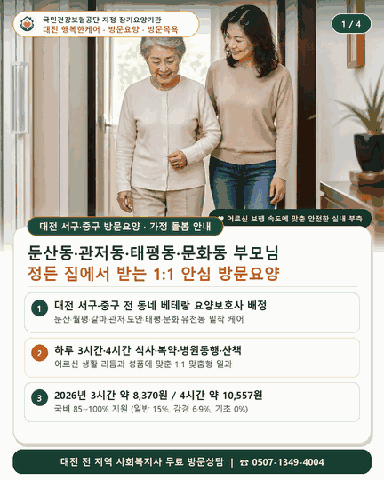
대전 서구(둔산동·월평동·갈마동·탄방동·관저동·도마동·가수원동)와 중구(태평동·문화동·오류동·유천동·대흥동·산성동), 그리고 유성구·대덕구·동구 전 지역 어르신 가정을 직접 찾아가는 국민건강보험공단 지정 재가장기요양기관 행복한케어입니다. 서구 대단지 아파트나 중구 주택가에 홀로 계시거나 노부부만 거주하시는 부모님의 식사·복약·병원동행·가정 목욕이 걱정되실 때, 2026년 장기요양 1~5등급 방문요양 이용 절차와 본인부담금(15%) 기준을 가장 알기 쉽게 정리해 드립니다.
부모님 연세가 높아지시거나 병원 퇴원 후 가정 돌봄이 필요해졌을 때, 보호자분들이 가장 먼저 검색하시는 것이 바로 믿고 맡길 수 있는 대전 방문요양센터입니다. 법정 본인부담금(15%)은 어느 지정 기관이나 동일하지만, 실제 어르신 돌봄 만족도와 가족분들의 안심을 좌우하는 5가지 핵심 선택 기준과 2026년 이용 절차를 한눈에 보기 쉽게 정리해 드립니다.
뇌졸중 편마비나 퇴행성 관절염, 치매 등으로 거동이 불편하신 어르신을 댁내 욕실에서 가족 혼자 씻겨드리는 일은 낙상 위험과 체력 부담이 매우 큽니다. 대전 중구·동구·서구·유성구·대덕구 전 지역 어르신 가정으로 국가자격 요양보호사 2인 1조가 직접 찾아가는 대전 방문목욕 진행 과정과 2026년 본인부담금(15%) 기준을 자세히 안내해 드립니다.
![[대전 장기요양등급 신청] 병원 입원 중·퇴원 직후 부모님 등급 신청과 방문조사 준비법](../assets/images/L040_01.png)
부모님께서 골절이나 뇌혈관질환 등으로 병원에 입원하셨거나 퇴원을 앞두고 계실 때, 자녀분들이 가장 먼저 막막해하시는 것이 바로 대전 장기요양등급 신청 시기와 절차입니다. 병원 퇴원 후 가정 돌봄 공백이 생기지 않도록 미리 준비해야 할 인정 신청 4단계와 국민건강보험공단 방문조사 핵심 체크포인트를 알기 쉽게 정리해 드립니다.

대전 중구(태평동·문화동·오류동·유천동·대흥동·목동·중촌동)와 대덕구(송촌동·법동·중리동·비래동·오정동)에 거주하시는 부모님의 거동이 불편해지셨거나 식사·복약·병원 동행이 걱정되시는 자녀분들을 위해, 2008년 제도 시행 초창기부터 오랜 현장 돌봄 노하우를 축적한 지정 재가장기요양기관 행복한케어가 태평동 재가서비스·대전 중구 방문요양(대전방문요양) 내용과 2026년 본인부담금(15%) 기준을 자세히 정리해 드립니다.
![[대전 방문요양] 부모님 재가방문요양 신청부터 하루 3시간·4시간 돌봄·본인부담금까지 한눈에 정리](../assets/images/L042_01.png)
연세가 높아지신 부모님께서 식사는 제때 챙겨 드시는지, 혈압·당뇨약은 거르지 않으시는지, 병원 진료 날 혼자 택시를 타고 다녀오시진 않는지 늘 마음이 쓰이는 자녀분들이 많습니다. 정든 집에서 편안하게 1:1 돌봄을 받으실 수 있는 대전 방문요양의 실제 하루 3시간·4시간 일과부터 2026년 본인부담금(15%), 사회복지사 무료 가정방문 상담 절차까지 사진과 함께 한눈에 정리해 드립니다.
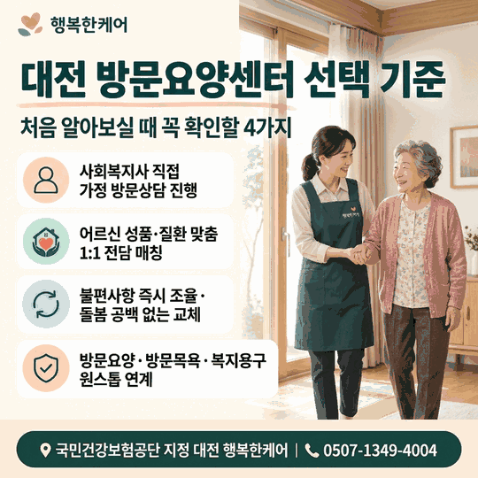
부모님 거동이 예전 같지 않으시거나 퇴원 후 가정 돌봄이 필요해졌을 때, 자녀분들이 가장 먼저 찾아보시는 것이 믿고 맡길 수 있는 대전 방문요양센터입니다. 국민건강보험공단 지정 센터의 법정 본인부담금(15%)은 모두 같지만, 어르신의 하루 만족도와 자녀분들의 안심을 결정짓는 4가지 핵심 차이와 2026년 이용 절차를 실사 가이드와 함께 정리해 드립니다.
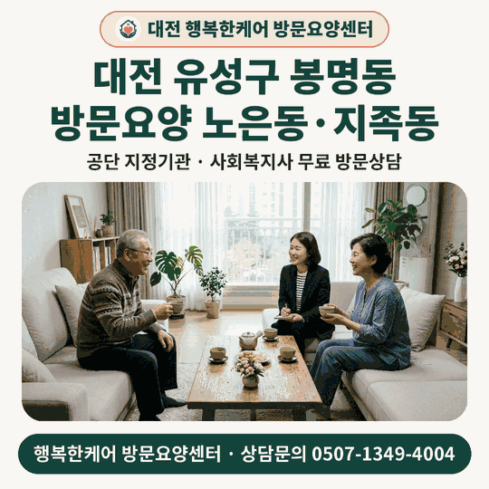
유성구 봉명동·지족동·반석동·노은동에서 혼자 계시거나 거동이 불편해진 부모님을 위해 믿을 수 있는 가정 방문요양을 알아보시는 보호자님들이 많습니다. 유성구 봉명동 본사 직영으로 운영되는 행복한케어가 2026년 장기요양 1~5등급 방문요양 하루 3시간·4시간 맞춤 일과부터 본인부담금 15% 기준, 첫날 사회복지사 동행 절차까지 한눈에 정리해 드립니다.
![[대전 장기요양등급 신청] 부모님 1~5등급·인지지원등급 인정조사 준비와 무료 방문상담](../assets/images/L045_01.png)
부모님께서 부쩍 걸음걸이가 느려지시거나 약 챙겨 드시는 일을 자주 깜빡하실 때, 가장 먼저 준비하셔야 할 것이 바로 대전 장기요양등급 신청입니다. 국민건강보험공단(1577-1000) 지정 재가장기요양기관 행복한케어가 초기 인정신청 접수부터 52개 항목 가정 방문조사 대비 체크포인트, 의사소견서 발급, 판정 직후 방문요양·방문목욕 연결까지 한눈에 정리해 드립니다.
대전 대덕구(송촌동·법동·중리동·비래동·신탄진동)와 동구(가오동·용운동·판암동·용전동·홍도동)에서 홀로 지내시거나 퇴원 후 거동이 불편해진 부모님을 위해 믿고 맡길 수 있는 대전 대덕구 방문요양 기관을 찾고 계신가요? 국민건강보험공단(1577-1000) 지정 재가장기요양기관 행복한케어가 하루 3시간·4시간 맞춤 방문돌봄 일과부터 2026년 본인부담금 15% 기준, 평일 저녁·주말 무료 출장 방문상담까지 사진과 함께 상세히 안내해 드립니다.
![[대전 재가복지센터] 방문요양센터 옮기기·변경 절차와 와상·콧줄·치매 기저귀 집중 케어](../assets/images/L047_01.png)
현재 이용 중인 방문요양센터의 시간 약속이나 돌봄 방식이 어르신과 맞지 않아 고민이시거나, 병원 퇴원 직후 와상·콧줄(경관영양) 식사·치매 기저귀 케어가 가능한 전문 대전 재가복지센터(대전 재가요양센터)를 찾고 계신가요? 국민건강보험공단(1577-1000) 지정 재가장기요양기관 행복한케어가 기존 장기요양등급 그대로 돌봄 공백 없이 당일 방문요양센터 옮기기·변경하는 3단계 절차부터 중증 어르신 1:1 집중 케어, 2026년 본인부담금(15%) 기준까지 상세히 안내해 드립니다.
부모님이 같은 질문을 반복하시거나 약 드신 것을 잊으셔서 치매가 의심될 때 어디서부터 시작해야 할지 막막하신가요? 대전 중구·서구·유성구 각 보건소 치매안심센터 조기검진 안내부터 장기요양 등급 신청, 그리고 치매전문교육을 이수한 베테랑 요양보호사의 1:1 가정 방문돌봄까지 국민건강보험공단(1577-1000) 지정 대전 중구 방문요양센터·서구 방문요양센터 행복한케어가 한눈에 정리해 드립니다.
![[대전 서구 방문요양] 관저동·갈마동·월평동·도마동 부모님 1:1 가정 돌봄과 센터 선택](../assets/images/L049_01.png)
대전 서구(관저동·갈마동·월평동·도마동·복수동·가수원동·둔산동·탄방동)에서 거동이 불편해지시거나 치매·노인성 질환으로 일상이 힘드신 부모님을 위해 믿고 맡길 수 있는 대전 서구 방문요양(대전 서구 방문요양센터)을 찾고 계신가요? 국민건강보험공단(1577-1000) 지정 재가장기요양기관 행복한케어가 하루 3~4시간 맞춤 가정 돌봄 일과부터 2026년 본인부담금(15%) 기준, 평일 저녁·주말 무료 출장 방문상담까지 상세히 안내해 드립니다.
![[대전 가족요양 신청] 요양보호사 자격증 가족 돌봄 급여 조건과 방문목욕 병행 가이드](../assets/images/L050_01.png)
요양보호사 자격증을 취득하신 배우자·자녀·며느리·사위가 집에서 부모님이나 배우자를 직접 모시는 대전 가족요양 신청 절차와 2026년 급여 인정 기준이 궁금하신가요? 국민건강보험공단(1577-1000) 지정 대전 가족요양센터 행복한케어가 하루 60분(월 20일) 일반형과 90분(월 31일) 특례형 조건 비교부터 주 1회 2인 1조 방문목욕 병행, 복잡한 공단 서류·RFID 태그 원스톱 등록까지 알기 쉽게 정리해 드립니다.
![[대전 유성구 방문목욕] 봉명동·노은동·도안동 거동불편 어르신 2인 1조 가정 목욕과 비용](../assets/images/L051_01.png)
거동이 불편하시거나 뇌경색·파킨슨병·치매·골절 수술 후 미끄러운 화장실에서 목욕하시기가 위험한 부모님 때문에 걱정이신가요? 국민건강보험공단(1577-1000) 지정 재가장기요양기관 행복한케어가 숙련된 국가자격 요양보호사 2인 1조가 어르신 댁으로 찾아가는 대전 유성구 방문목욕(대전 방문목욕) 4단계 안전 절차와 2026년 본인부담금(15% 기준 1회 약 7,510원)을 상세히 안내해 드립니다.
대전 중구(태평동·문화동·유천동·오류동·목동·중촌동·대흥동·선화동·용두동)에서 장기요양등급을 받으신 부모님을 모실 때 대전주간보호센터(데이케어)에 보내드려야 할지, 아니면 집으로 요양보호사 선생님이 찾아오시는 대전 중구 방문요양(대전 중구 방문요양센터)을 이용해야 할지 고민되시나요? 국민건강보험공단(1577-1000) 지정 재가장기요양기관 행복한케어가 방문요양 신청 전 꼭 확인해야 할 두 서비스의 차이점과 병행 활용법, 2026년 본인부담금(15%) 기준까지 명쾌하게 비교해 드립니다.
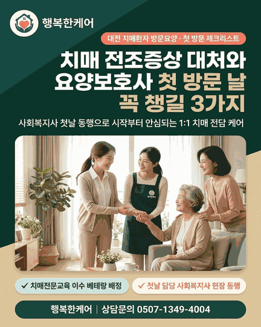
부모님께서 방금 하신 말씀을 반복하시거나 약 복용 시간을 자꾸 헷갈리셔서 치매가 걱정되시나요? 막상 대전 치매환자 방문요양을 신청하려 해도 낯선 요양보호사 선생님이 처음 오시는 날 부모님이 거부감을 느끼시진 않을지 고민이실 텐데요. 국민건강보험공단(1577-1000) 지정 재가장기요양기관 행복한케어가 치매 전조증상 발견 시 첫 대처법부터 요양보호사 첫 방문 날 보호자가 꼭 챙겨야 할 3가지 체크리스트, 사회복지사 첫날 동행 케어까지 상세히 안내해 드립니다.
대전 대덕구 송촌동·법동·중리동·비래동·신탄진에 홀로 계시거나 노부부만 거주하시는 부모님 식사와 병원 동행, 약 복용이 걱정되시나요? 직장 생활과 육아로 매일 찾아뵙기 어려운 자녀분들을 위해 국민건강보험공단(1577-1000) 지정 재가장기요양기관 행복한케어가 대전 대덕구 방문요양 1:1 맞춤 가정 돌봄 프로그램부터 장기요양등급 무료 방문 신청 대행, 2026년 본인부담금(15%)까지 한눈에 정리해 드립니다.
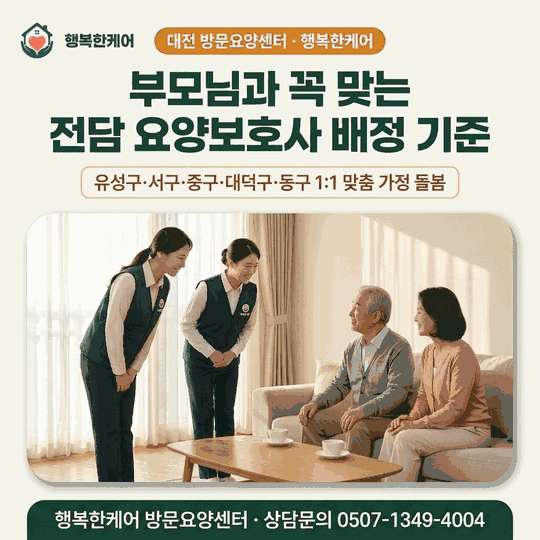
부모님을 모실 대전 방문요양센터를 알아볼 때 가장 고민되는 부분은 '과연 우리 부모님과 성향이 잘 맞고 믿을 수 있는 요양보호사 선생님이 오실까?' 하는 점입니다. 국민건강보험공단(1577-1000) 지정 재가장기요양기관 행복한케어가 유성구·서구·중구·대덕구·동구 어르신 댁 1:1 요양보호사 배정 4대 기준부터 2026년 방문요양 본인부담금(15%) 계산표, 사회복지사 첫날 동행 케어까지 투명하게 안내해 드립니다.
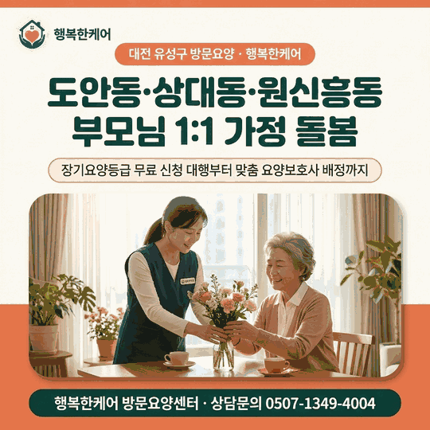
대전 유성구 도안동, 상대동, 원신흥동, 봉명동에 거주하시는 부모님께서 예전보다 부쩍 기력이 약해지시거나 병원 동행과 식사 챙김이 힘겨워 보이시나요? 국가에서 노인장기요양보험 제도를 시행한 초창기부터 시작해 오랜 현장 노하우를 쌓아온 국민건강보험공단(1577-1000) 지정 재가장기요양기관 행복한케어가 대전 유성구 방문요양 신청 절차부터 사회복지사 첫날 동행 케어, 2026년 본인부담금(15%)까지 알기 쉽게 정리해 드립니다.
대전 서구(둔산동·탄방동·갈마동·월평동·관저동·도마동) 및 유성구·중구·대덕구·동구에서 부모님이나 배우자를 모실 대전 방문요양센터와 가족요양 기관을 찾고 계신가요? 국가에서 노인장기요양보험 제도를 시행한 초창기부터 시작해 오랜 현장 돌봄 노하우를 축적한 국민건강보험공단(1577-1000) 지정 재가장기요양기관 행복한케어(나눔예수사랑노인복지센터)가 대전 방문요양 및 가족요양 60분·90분 급여 조건부터 주 1회 2인 1조 방문목욕 병행 방법, 장기요양등급 신청 절차까지 한눈에 정리해 드립니다.

낮에는 직장 때문에 부모님이 홀로 계시는 시간이 길어 걱정되시나요? 상담을 진행하다 보면 보호자님들께서 가장 많이 물으시는 질문이 바로 '주간보호센터에 다니시면서 아침이나 저녁, 주말에는 대전 방문요양이나 방문목욕을 함께 이용할 수 있나요?'입니다. 국민건강보험공단(1577-1000) 지정 재가장기요양기관 행복한케어가 2026년 월 한도액 안에서 3가지 재가급여를 가장 알차게 조합하는 방법과 실제 어르신 설계 사례, 본인부담금(15%) 계산법까지 명쾌하게 정리해 드립니다.

부모님 장기요양등급을 처음 신청하실 때 가장 많이 헷갈려 하시는 절차가 바로 국민건강보험공단(1577-1000) 장기요양 의사소견서 발급 시점과 발급 병원, 그리고 본인부담 비용입니다. 무조건 처음부터 병원에 가서 소견서를 떼면 비용 환급이 안 될 수도 있어 순서를 정확히 아셔야 합니다. 대전 유성구·서구·중구·대덕구·동구 지정 재가장기요양기관 행복한케어가 2026년 장기요양 의사소견서 발급 비용 지원 기준부터 공단 방문조사 체크리스트, 1~5등급 판정 후 하루 3~4시간 가정 방문요양 연결까지 한눈에 정리해 드립니다.
![[대전 장기요양등급 신청] 병원 입원 중·퇴원 전 부모님 등급 신청절차와 파킨슨·치매 방문요양 비용](../assets/images/L060_01.png)
부모님께서 갑작스러운 골절·뇌경색·파킨슨병·치매로 병원에 입원 중이실 때 퇴원 전 '입원중 요양등급신청방법'이 가능한지, 또 '장기요양'이나 '방문요양' 용어가 생소한 보호자분들이 국민건강보험공단(1577-1000) 장기요양 4등급·5등급을 받으셨을 때 대전 치매 요양원 입소 대신 정든 집에서 하루 3시간·4시간 어르신 노인 돌봄(대전 방문요양·대전방문요양), 병원 동행·투석 동행, 주 1회 출장 방문목욕을 어떻게 이용하는지 궁금해하십니다. 2008년 제도 시행 초창기부터 오랜 현장 돌봄 노하우를 축적해 온 대전 지정 재가장기요양기관 행복한케어가 병원 입원 중 등급 신청 요령부터 2026년 4등급·5등급 월 한도액·본인부담금(일반 15%, 감경 9%·6%, 기초생활수급자 법정 0%) 계산법까지 명쾌하게 정리해 드립니다.
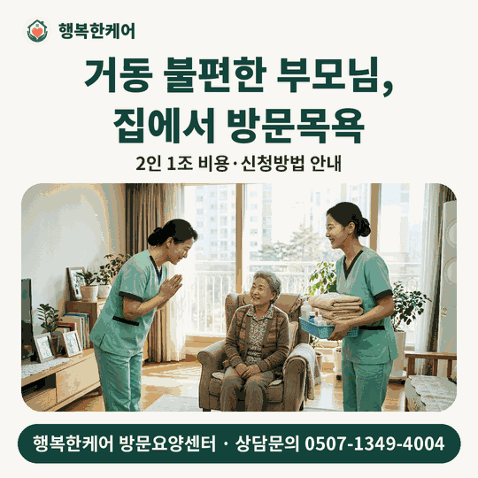
뇌경색·파킨슨병·치매·고관절 수술 후 거동이 힘들어지거나 누워 계신 부모님을 가정 화장실에서 씻겨드리다 보면 미끄러운 바닥 때문에 어르신 낙상 위험이 크고 보호자님도 허리와 손목을 다치기 쉽습니다. '방문목욕'이라는 용어를 잘 모르셔서 '거동 불편 노인 출장 목욕'이나 '집에서 어르신 목욕 시켜주는 곳'을 찾으셨다면, 국민건강보험공단(1577-1000) 장기요양 1~5등급 어르신 누구나 국비 85~100% 지원으로 이용하실 수 있는 2026년 가정 방문목욕 비용·수가(일반 15% 기준 1회 약 7,510원, 기초생활수급자 법정 0%)와 대전 전 지역 2인 1조 안전 목욕 절차를 자세히 안내해 드립니다.
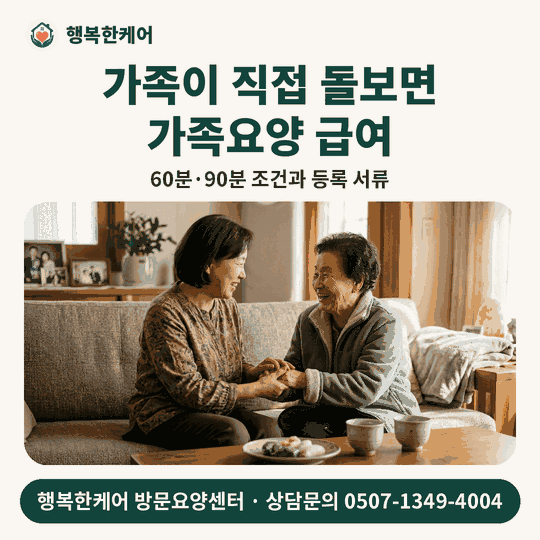
요양보호사 자격증을 취득하신 배우자, 자녀, 며느리, 사위가 장기요양 1~5등급 부모님이나 배우자를 집에서 직접 돌보실 때 받는 '가족방문요양(가족요양 케어 본인 직접 돌봄)' 조건과 만 65세 이상 배우자 '노노케어 요양급여(하루 90분·월 31일)', 그리고 가족관계증명서·제적등본 등 공단 등록 서류를 찾고 계신가요? 국민건강보험공단(1577-1000) 고시 기준과 2008년 제도 시행 초창기부터 축적한 대전 가족요양센터 행복한케어의 현장 노하우로 60분·90분 급여 기준부터 주 1회 방문목욕 병행까지 한눈에 정리해 드립니다.
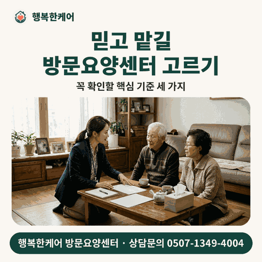
직장 생활이나 타지 거주로 혼자 계신 부모님의 식사·복약 안부, 대학병원 외래 진료나 주 3회 인공신장실 혈액투석 병원 동행, 파킨슨병·치매·뇌경색 퇴원 후 가정 노인 돌봄이 필요할 때 어떤 '대전 요양보호센터 좋은곳(대전 방문요양센터·대전방문요양)'을 선택해야 오랜 기간 안심하고 맡길 수 있을까요? 국가에서 노인장기요양보험을 시행한 초창기(2008년)부터 시작해 오랜 돌봄 노하우를 축적해 온 국민건강보험공단(1577-1000) 지정 재가장기요양기관 행복한케어(나눔예수사랑노인복지센터)가 2026년 국가지원(85~100%) 본인부담금 기준부터 병원·투석 동행 케어, 사회복지사 첫날 현장 동행, 대전 서구 도안동·유성구 근거리 요양보호사 1:1 매칭 및 채용 기준까지 자세히 안내해 드립니다.

'장기요양'이나 '방문요양' 용어가 낯선 보호자분들도 쉽게 이해하실 수 있도록, 2026년 보건복지부와 국민건강보험공단(1577-1000) 고시 기준 어르신 노인 돌봄 국가지원(85~100%) 1~5등급·인지지원등급 월 한도액과 집으로 찾아오는 요양보호사 방문요양 시간별(60분~240분·병원동행·투석동행·치매·파킨슨 케어) 수가, 본인부담금(일반 15%, 감경 9%·6%, 기초생활수급자 법정 0%), 그리고 거동 불편 노인 가정 방문목욕 비용을 대전 지정 재가장기요양기관 행복한케어가 공식 기준표로 정리해 드립니다.

부모님 거동이 불편해지거나 치매·파킨슨병·뇌경색 퇴원 후 가정 돌봄이 필요할 때 가장 먼저 스마트폰으로 대전 방문요양센터나 대전방문요양, 유성구·서구 노인돌봄을 검색하게 됩니다. 국민건강보험공단(1577-1000) 지정 재가장기요양기관 행복한케어가 보호자분들이 안심하고 부모님을 맡기실 수 있는 대전 방문요양센터 선택 기준 7가지와 2026년 국가지원(85~100%) 본인부담금·무료 등급신청 대행 절차를 알기 쉽게 안내해 드립니다.
뇌경색·고관절 골절 퇴원 직후나 파킨슨병·와상 상태로 화장실 문턱을 넘기 힘드신 부모님을 가족끼리 씻겨 드리다 보면 미끄럼 낙상 위험과 허리 부담 때문에 매번 큰 걱정이 앞섭니다. 이럴 때 스마트폰으로 대전 방문목욕 신청 절차와 비용을 찾아보시는 보호자분들을 위해, 노인장기요양보험 제도 시행 초창기(2008년)부터 현장 돌봄 노하우를 쌓아온 국민건강보험공단(1577-1000) 지정 재가장기요양기관 행복한케어가 안전한 2인 1조 가정 방문목욕 진행 과정과 2026년 본인부담금·방문요양 병행 방법을 자세히 정리해 드립니다.
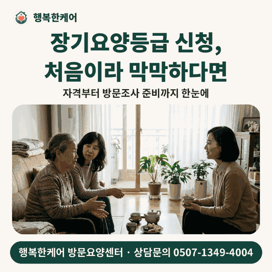
부모님께서 예전보다 걸음이 부쩍 느려지시거나 같은 말씀을 자주 되풀이하실 때 자녀분들의 마음은 덜컥 내려앉기 마련입니다. 직장과 가정을 돌보느라 매일 곁을 지키지 못한다는 미안함 속에서 대전 장기요양등급 신청을 알아보시지만 막상 서류부터 방문조사까지 어디서부터 손대야 할지 막막하실 때가 많습니다. 노인장기요양보험 제도 시행 초창기(2008년)부터 현장 돌봄 노하우를 쌓아 온 국민건강보험공단 지정 재가장기요양기관 행복한케어 방문요양센터가 처음 준비하시는 보호자분들을 위해 신청 자격과 진행 순서, 방문조사 준비 요령, 2026년 돌봄 비용까지 한눈에 보실 수 있도록 알기 쉽게 정리해 드립니다. 복잡한 용어가 낯설더라도 순서대로 따라오시면 한결 마음이 놓이실 것입니다.
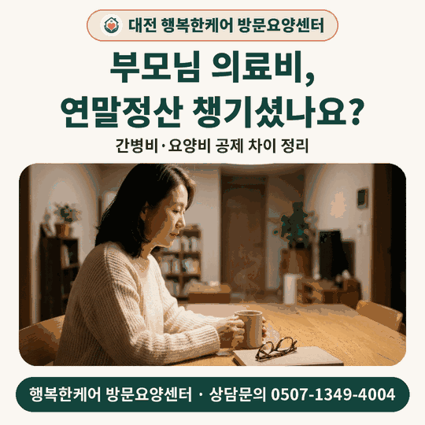
찬 바람이 불고 연말이 가까워지면 한 해 동안 부모님 병원비와 약값, 돌봄 비용으로 지출한 내역을 어떻게 챙겨야 할지 고민하시는 직장인 자녀분들이 많아집니다. 특히 국세청 홈택스 미리보기 철이 되면 부모님 연말정산 의료비 공제 조건과 요양 관련 비용 포함 여부를 미리 살펴두어야 놓치는 세금을 줄일 수 있습니다. 오늘은 만 65세 이상 어르신 의료비 세액공제 핵심 계산법부터 사설 간병비와 국가 장기요양 본인부담금의 결정적인 차이, 그리고 돌봄 부담을 현명하게 더는 방법까지 차근차근 정리해 드립니다. 복잡한 세법 기준도 핵심만 짚어보시면 연말 세금 준비는 물론 내년 부모님 돌봄 계획까지 한결 수월하고 든든해집니다.
아침저녁으로 기온이 뚝 떨어지고 찬 바람이 불기 시작하는 계절에는 어르신들의 관절이 굳고 균형 감각이 떨어지면서 집 안이나 외출 길에서 뜻밖의 낙상 사고가 부쩍 늘어나게 됩니다. 특히 고관절이나 손목, 척추를 다쳐 한 번 입원을 하시고 나면 퇴원 이후 침대에서 일어나시거나 욕실로 이동하실 때 큰 도움이 필요해져 자녀분들이 막막함을 느끼시는 경우가 많습니다. 오늘은 대전 복지용구 국비 지원 품목과 전동침대 대여 방법, 낙상 예방 안전손잡이 활용법, 그리고 퇴원 후 함께 쓰면 좋은 2026년 방문요양 본인부담금까지 알기 쉽게 정리해 드립니다.
병원에 입원해 계신 부모님의 퇴원 날짜가 다가올수록 자녀분들은 당장 퇴원 후 누가 어떻게 모셔야 할지 막막해지기 마련입니다. 이때 가장 먼저 알아보셔야 할 절차가 바로 부모님 요양등급 받는법과 국민건강보험공단 방문조사 준비입니다. 많은 보호자분들이 꼭 퇴원을 마치고 집으로 돌아와야만 장기요양등급 신청이 가능하다고 오해하시지만, 급성기 치료나 수술 후 상태가 안정되어 간다면 입원 중에도 미리 신청해 두실 수 있습니다. 오늘은 병원 입원 중 진행 순서부터 방문조사 때 놓치기 쉬운 실수, 의사소견서 발급과 2026년 방문요양 비용까지 차근차근 정리해 드립니다.
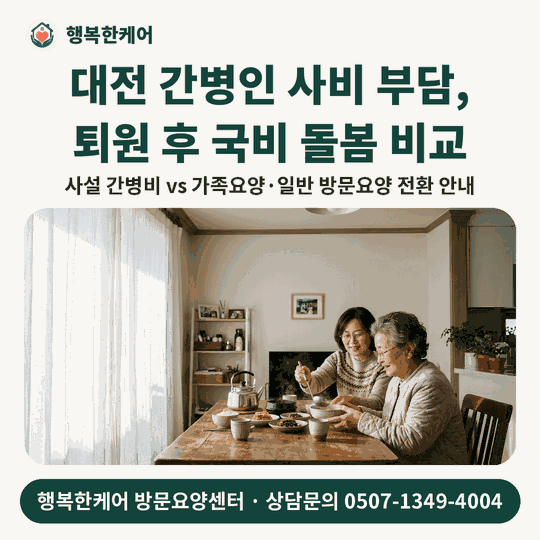
부모님이나 배우자가 거동이 불편해지셨을 때 낯선 외부인이 집으로 오는 것보다 가족이 직접 곁에서 챙겨드리고 싶어 하시는 분들이 많습니다. 이때 가장 많이 찾아보시는 제도가 바로 요양보호사 자격증을 취득해 돌봄에 참여하는 가족요양보호사 급여와 가족요양 조건입니다. 하지만 가족이라면 무조건 다 해당되는지, 하루 60분과 90분 기준은 어떻게 나뉘는지, 다른 직장을 다니면서 병행해도 되는지 헷갈리는 부분이 적지 않습니다. 오늘은 배우자·자녀 기준부터 월 청구 가능 일수, 병행 가능한 방문목욕과 복지용구 혜택까지 꼼꼼하게 정리해 드립니다.
부모님께서 예전과 달리 방금 드신 식사를 잊으시거나 같은 질문을 반복하시고, 외출 후 집 찾아오시는 길을 헷갈려 하시면 자녀분들 마음은 무거워집니다. 당장 다그치거나 설득하려 할수록 어르신이 자존심 상해 하시고 거부감이 커지는 경우가 많아, 많은 가족들이 차분한 부모님 치매 대처 방법부터 먼저 찾아보십니다. 오늘은 가족이 곁에서 기억력을 지켜드리는 대화 요령과 치매 초기 장기요양 5등급·인지지원등급 신청, 그리고 집에서 이용하는 인지활동형 방문요양과 2026년 본인부담금까지 한눈에 정리해 드립니다.
날씨가 쌀쌀해지는 겨울철이 되면 거동이 어렵거나 침대에 누워 지내시는 어르신의 위생 관리 때문에 가족들의 고민이 한층 깊어집니다. 어르신을 댁에서 직접 씻겨드리자니 낙상이나 체온 저하가 걱정되고, 가족 한두 분 힘으로는 침대에서 욕실까지 모시는 일부터 쉽지 않아 안전한 와상환자 목욕법부터 많이 찾아보십니다. 이럴 때 공단 지원을 받아 전문 인력 2인 1조가 댁으로 찾아오는 가정 방문목욕 제도를 함께 활용하시면 부담을 크게 줄일 수 있습니다. 오늘은 겨울철 집에서 안전하게 씻기는 준비물과 확인 절차, 그리고 2026년 방문목욕 서비스 가격까지 알기 쉽게 정리해 드립니다.
다른 지역에서 직장을 다니거나 바쁜 일상을 보내느라 대전 유성구와 서구, 중구·대덕구·동구에 홀로 계신 부모님 안부를 전화로만 챙기다 보면 늘 한구석이 쓰이기 마련입니다. 식사는 제때 거르지 않으시는지, 대학병원 외래나 투석 날짜는 혼자 잘 다녀오실 수 있을지 걱정이 크실 때 많이 찾아보시는 곳이 바로 대전 재가요양센터와 노인복지센터입니다. 오늘은 공단 지정 재가 기관을 고르실 때 꼭 확인해야 할 3가지 기준부터 요양보호사 방문 범위(식사·투약·병원동행), 그리고 2026년 국비 지원 본인부담금까지 한눈에 정리해 드립니다.
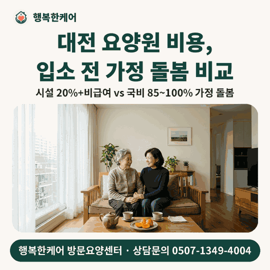
부모님께서 예전보다 거동이 부쩍 힘들어지시거나 기억력이 흐려지기 시작하면 자녀분들이 가장 먼저 검색하시는 정보가 바로 대전 요양원 비용입니다. 가족 모두가 직장에 다니느라 낮 시간 돌봄이 막막해지면 시설 입소부터 알아보게 되지만, 실제로 한 달 비용 구성을 살펴보면 시설 입소 외에도 노인장기요양보험 국비 지원을 받아 부모님 댁에서 모시는 가정 돌봄이라는 든든한 선택지가 있습니다. 오늘은 요양원 한 달 실부담 구조와 입소 전 집에서 이용할 수 있는 국비 방문요양 비용·돌봄 범위를 차분히 비교해 드립니다.
부모님께서 방금 하신 말씀을 곧바로 되묻거나, 익숙한 동네 길을 잠시 헤매시는 모습을 보실 때 가족들의 마음은 덜컥 내려앉기 마련입니다. 단순한 건망증인지 초기 인지 저하인지 확인하고 싶지만 막상 어떤 대전 치매 검사 병원을 먼저 예약해야 할지, 비용은 얼마나 드는지 막막하실 때가 많습니다. 오늘은 대전 5개 구 보건소 치매안심센터에서 무료로 진행하는 1차 선별검사와 협력병원 정밀 진단 순서, 그리고 판정 후 국비 지원 가정 돌봄으로 연결하는 절차까지 차근차근 정리해 드립니다.

부모님께서 뇌졸중이나 고관절 골절, 만성 질환 악화로 장기 입원을 하시게 되면 보호자분들이 가장 크게 체감하시는 어려움이 바로 대전 요양병원 비용입니다. 건강보험이 적용되는 진료비·입원료 외에도 전액 자비로 내야 하는 사적 간병비 부담이 매달 백만 원 이상씩 쌓이다 보니, 급성기 치료가 마무리되면 집으로 모시고 나와 국비 지원 돌봄으로 전환하려는 가정이 많습니다. 오늘은 요양병원 간병비 부담을 줄이기 위해 퇴원 전에 준비할 등급 신청 순서와 집에서 가족이 직접 돌보며 급여도 받는 가족요양 방법을 정리해 드립니다.
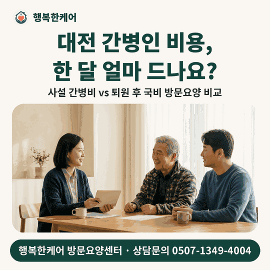
부모님께서 갑작스러운 골절 수술이나 뇌혈관·내과 치료로 큰 대학병원에 입원하셨다가 퇴원 날짜가 잡히면, 자녀분들이 가장 먼저 찾아보시는 숫자가 바로 대전 간병인 비용입니다. 병원이나 집에서 24시간 사설 간병인을 모시면 하루 십수만 원이 넘는 지출이 전액 사비로 이어지기 때문에, 직장 생활을 하면서 한 달 이상 버티기가 쉽지 않습니다. 오늘은 실제 24시간 간병인 비용 구조와 퇴원 후 집으로 모셨을 때 국민건강보험공단 국비 지원으로 부담을 크게 낮출 수 있는 가정 방문요양·복지용구 활용 방법을 한눈에 정리해 드립니다.
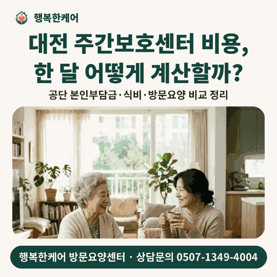
맞벌이를 하시거나 직장과 가정을 함께 돌보는 자녀분들께서 낮 시간 부모님 식사와 안전이 걱정될 때 가장 먼저 찾아보시는 항목이 바로 대전 주간보호센터 비용입니다. 노인유치원이라고도 부르는 주간보호센터는 장기요양등급 판정을 받은 어르신이 낮 동안 센터에 다녀오시는 서비스인 만큼, 월 본인부담금뿐 아니라 식사·간식비와 송영 조건까지 꼼꼼히 계산해 보셔야 실제 지출을 정확히 파악할 수 있습니다. 오늘은 노인주간보호센터 비용 계산 구조와 등급 유무에 따른 차이, 그리고 1:1 국비 방문요양과 어떻게 비교·병행하면 좋은지 한눈에 정리해 드립니다.
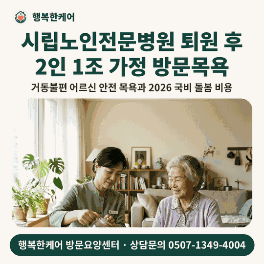
부모님 기력이 부쩍 약해져 낮 시간 식사와 병원 동행이 걱정되면 자녀분들이 가장 먼저 찾아보시는 숫자가 바로 부모님 요양보호사 비용입니다. 많은 가정에서 개인 간병인이나 가사도우미를 따로 부르면 하루 십만 원이 넘게 들지 않을까 걱정하시지만, 국민건강보험공단 장기요양등급을 받으시면 전체 급여 비용의 85%에서 100%를 국가가 지원해 드려 한 달 실제 지출이 크게 낮아집니다. 오늘은 2026년 공단 고시 기준 방문요양 비용 단가와 일반·감경·기초수급별 방문요양 본인부담금 계산법, 추가 비용 없이 안전하게 이용하는 방법까지 차분히 정리해 드립니다.

부모님께서 예전보다 넘어지실 뻔한 일이 잦아지거나 식사 챙기기가 버거워 보이면, 자녀 입장에서는 안전한 돌봄을 위해 부모님 요양원 설득을 조심스럽게 꺼내 보게 됩니다. 하지만 평생을 지내온 내 집과 동네를 떠난다는 생각에 서운함과 두려움을 느끼시는 어르신이 많아 대화가 매번 감정싸움이나 침묵으로 끝나기 쉽습니다. 오늘은 부모님의 자존심과 마음을 다치지 않으면서 돌봄 이야기를 여는 대화 요령과, 시설 입소 전 정든 집에서 국비 지원을 받아 모실 수 있는 현실적인 방문요양 대안을 함께 정리해 드립니다.
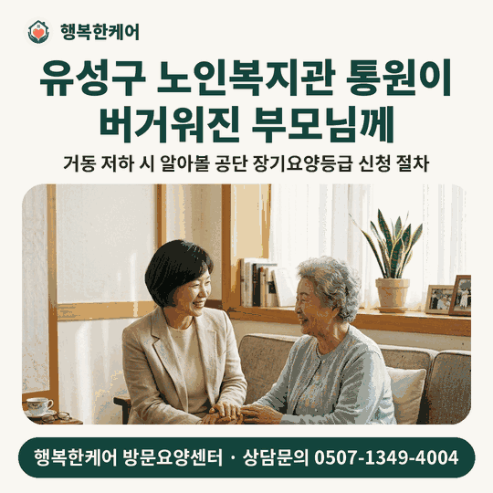
부모님께서 배우자를 먼저 보내시거나 자녀들이 멀리 타지에 살고 있어 홀로 지내시는 시간이 길어지면, 보호자분들이 가장 먼저 알아보시는 절차가 바로 독거노인 돌봄 신청입니다. 막상 어디서부터 신청해야 할지 검색해 보면 동 행정복지센터의 노인맞춤돌봄서비스부터 국민건강보험공단의 장기요양 방문요양까지 제도가 나뉘어 있어 헷갈리기 쉽습니다. 오늘은 지자체 돌봄과 국비 장기요양 가정 방문요양의 지원 범위 차이를 정리하고, 부모님 건강 상태에 맞게 공백 없이 돌봄을 연결하는 순서를 안내해 드립니다.

부모님께서 갑작스러운 질환이나 골절로 입원하시거나 퇴원 후에도 거동이 불편해지시면, 자녀분들이 가장 먼저 찾아보시는 정보가 바로 부모님 간병비 지원 제도입니다. 사적 간병인을 하루 종일 모시면 매달 수백만 원의 비용이 고스란히 가정 부담으로 쌓이기 때문입니다. 오늘은 입원 단계에서 살펴볼 수 있는 공적 지원과 퇴원 후 가정에서 국비로 돌봄 부담을 낮추는 가족요양·방문요양 신청 기준까지 차분히 정리해 드립니다.
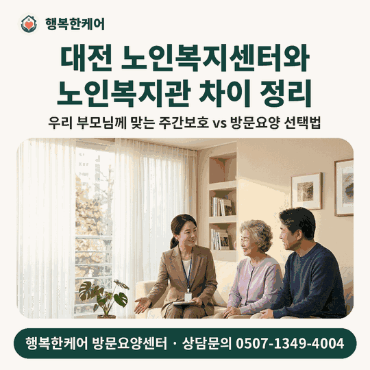
부모님 건강과 돌봄이 걱정되기 시작하면 많은 자녀분들이 가장 먼저 지역 내 복지 기관을 검색하며 대전 노인복지센터를 찾아보십니다. 하지만 막상 검색해 보면 시·구에서 운영하는 노인복지관과 국민건강보험공단 지정 재가장기요양기관, 주간보호센터가 섞여 나와 어디에 문의해야 할지 헷갈리는 경우가 많습니다. 오늘은 노인복지관과 공단 지정 센터의 역할 차이부터, 부모님 컨디션에 맞는 주간보호·방문요양 선택 기준까지 차분히 정리해 드립니다.
부모님 곁을 가족이 직접 지키면서 요양보호사 등록과 국비 급여까지 연계하려는 보호자분들이 가장 먼저 확인하시는 항목이 바로 가족요양 조건입니다. 요양보호사 자격증을 취득해 두더라도 가족 관계 범위, 타 직장 근로시간, 돌봄 인정 시간(60분·90분)과 타 급여 중복 여부에 따라 지급 여부가 달라지기 때문에 사전 점검이 중요합니다. 오늘은 2026년 국민건강보험공단 기준에 맞춰 배우자·자녀가 놓치기 쉬운 핵심 요건을 항목별로 정리해 드립니다.
부모님께서 예전과 달리 식사 챙김이나 보행, 외출을 혼자 해내기 버거워하실 때 자녀분들이 가장 먼저 검색하시는 내용이 장기요양등급 신청방법입니다. 공단 지사에 직접 찾아가야 하는지, 인터넷이나 모바일로도 대신 접수할 수 있는지, 병원 의사소견서는 언제 내야 하는지 막막하실 수 있습니다. 오늘은 처음 신청하시는 보호자분도 순서대로 따라 하실 수 있게 신청 자격부터 인터넷·방문 접수, 공단 인정조사 준비까지 한눈에 정리해 드립니다.
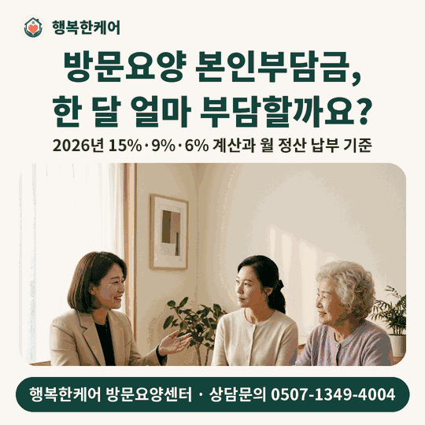
부모님 댁으로 요양보호사를 모시기로 마음먹으신 뒤 보호자분들이 가장 꼼꼼하게 따져 보시는 항목이 바로 방문요양 본인부담금입니다. 장기요양등급을 받으면 국가가 비용 대부분을 지원한다고 들었지만, 실제로 우리 부모님께는 15%, 9%, 6% 중 어떤 비율이 적용되는지, 매월 얼마를 언제 어떻게 납부하는지 궁금하실 수 있습니다. 오늘은 2026년 국민건강보험공단 고시를 바탕으로 방문요양 본인부담금 계산방법과 감경 확인, 월 정산 납부 방식까지 차분히 정리해 드립니다.

부모님께서 최근 방금 들은 이야기를 자꾸 되묻거나 복약 시간을 자주 놓치기 시작하면 보호자분들은 혹시 노인장기요양보험 혜택을 받을 수 있을지 고민하게 됩니다. 신체 거동은 비교적 가능해 보여도 인지 기능 변화로 일상 관리에 도움이 필요하다면 장기요양등급 5등급 기준에 해당할 가능성이 높습니다. 오늘은 2026년 국민건강보험공단 고시를 바탕으로 장기요양등급 5등급 판정 조건과 월 재가급여 한도액, 인지활동형 방문요양 비용과 가족요양·복지용구 혜택까지 차분히 정리해 드립니다.
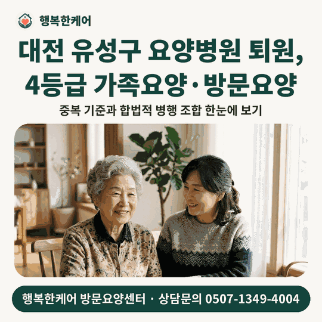
국민건강보험공단에서 부모님께 장기요양등급 4등급 판정을 받으셨을 때 보호자분들이 가장 먼저 궁금해하시는 부분은 '매달 얼마까지 국가 지원을 받는지', '하루 몇 시간씩 방문요양을 부를 수 있는지', 그리고 '복지용구와 목욕 지원도 따로 되는지'입니다. 4등급은 전체 수급자 중에서도 가장 많은 어르신이 해당되는 등급이지만, 월 한도액 안에서 시간과 서비스를 어떻게 조합하느냐에 따라 체감되는 돌봄 만족도가 크게 달라집니다. 오늘은 2026년 공단 고시 기준 장기요양등급 4등급 혜택의 시간·금액·복지용구·시설 입소 예외 조건까지 한눈에 알기 쉽게 정리해 드립니다.
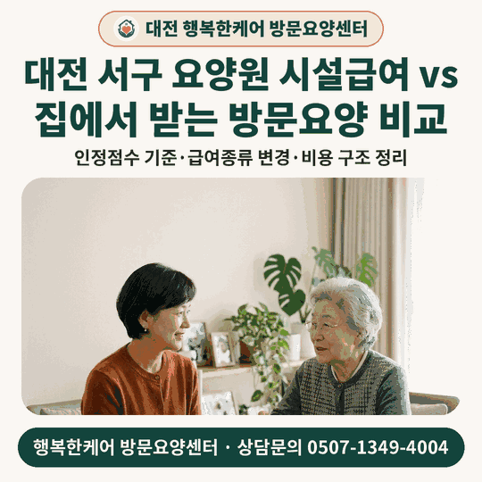
부모님 노인장기요양보험을 처음 신청하시는 보호자분들은 국민건강보험공단 직원이 집으로 나와 무엇을 보고 몇 점을 매기는지 궁금해하십니다. 등급은 조사원의 막연한 인상이나 주관적 판단으로 정해지는 것이 아니라, 정해진 조사표에 따라 산출되는 장기요양등급 점수(장기요양인정점수) 구간을 토대로 등급판정위원회 심의를 거쳐 결정됩니다. 오늘은 2026년 공단 고시 기준 1~5등급·인지지원등급 점수 커트라인과 방문조사 5대 평가 영역, 조사 당일 실제 상태를 정확히 전달하는 준비 요령까지 알기 쉽게 정리해 드립니다.

부모님께서 장기요양등급을 받으신 뒤 많은 가족분들이 집으로 요양보호사를 모시는 방문요양과 낮 동안 센터를 오가는 주야간보호센터 중 무엇을 선택할지 고민하십니다. 두 서비스 모두 어르신이 요양원에 입소하지 않고 가정에서 지내시며 이용하는 재가급여이지만, 실제 이용 가능 등급과 식대·간식비 같은 추가 실비, 어르신이 느끼는 하루 피로도에서 분명한 차이가 있습니다. 오늘은 방문요양 주간보호 차이를 2026년 공단 고시 기준으로 차분히 비교하고, 월 한도액 안에서 두 돌봄을 유연하게 병행하는 방법까지 정리해 드립니다.
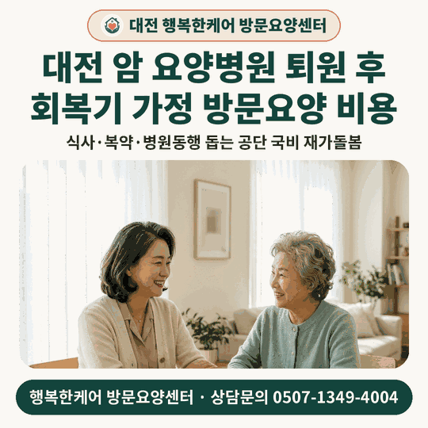
부모님 댁에 요양보호사를 모시려 할 때 가장 먼저 궁금해지는 부분이 바로 방문요양 비용입니다. 사설 간병인처럼 하루에 십만 원 이상씩 전부 가정에서 부담해야 하는지 걱정하시는 분들이 많지만, 노인장기요양보험 1~5등급을 받으시면 2026년 국민건강보험공단 고시 기준 전체 급여액의 85%에서 100%를 국가가 지원해 드려 한 달 실제 지출이 크게 내려갑니다. 오늘은 방문요양 비용의 시간별(60분~240분) 공단 수가와 일반·감경·기초수급별 본인부담금, 등급별 월 한도 계산법까지 한 번에 정리해 드립니다.
연로하신 배우자가 거동이 불편해지거나 치매 초기 증상을 보이실 때, 외부 요양보호사보다 평생 함께 지낸 배우자가 직접 곁을 지키며 정성을 다하고 싶어 하시는 가정이 많습니다. 이때 만 65세 이상 배우자가 요양보호사 자격증을 취득해 돌봄에 참여하면 공적 지원을 받을 수 있는 제도가 바로 배우자 가족요양 90분 특례입니다. 일반적인 자녀 돌봄과 달리 가족요양 90분 조건과 월 최대 31일 특례가 적용되어 실질적인 도움이 크지만, 타 직장 근로시간이나 병행 가능한 방문목욕 규정까지 정확히 알고 시작하셔야 추후 불이익이 없습니다. 오늘은 2026년 기준 배우자 가족요양 90분 조건과 급여 정산 구조, 본인부담률과 병행 설계 방법까지 한눈에 정리해 드립니다.
부모님께서 큰 수술이나 골절 치료를 마치고 퇴원을 앞두시거나 거동이 예전 같지 않으실 때, 보호자분들이 가장 먼저 알아보시는 지원 중 하나가 전동침대 대여 방법입니다. 시중에서 고가의 의료용 침대를 전액 사비로 구매하자니 비용과 처분 부담이 크지만, 노인장기요양보험 등급을 받으시면 연간 160만 원 복지용구 한도 안에서 85%에서 100%까지 국비 지원을 받아 합리적으로 대여하실 수 있습니다. 오늘은 2026년 기준 전동침대 대여 방법과 구비 서류, 본인부담률, 그리고 퇴원 직후 방문요양·방문목욕과 함께 조합하는 요령까지 한 번에 정리해 드립니다.

부모님께서 갑작스러운 질환이나 골절, 기력 저하로 퇴원 시기가 다가오면 가족분들이 가장 먼저 고민하시는 결정이 바로 부모님 요양병원 모시기입니다. 하지만 상시 의료 처치가 꼭 필요한 단계가 아닌데도 섣불리 입원을 결정하셨다가 매달 수백만 원대에 이르는 사적 간병비와 정서적 위축으로 되돌리는 가정이 적지 않습니다. 반대로 노인장기요양보험 1~5등급을 활용하면 익숙한 집에서 국가 지원을 받으며 1:1 방문요양과 방문목욕을 연계할 수 있습니다. 오늘은 요양병원 입원이 필요한 기준과 가정 내 국비 방문요양의 비용·생활 차이, 사전 등급 신청 절차까지 한눈에 비교해 드립니다.

부모님께서 방금 나눈 대화를 곧바로 잊으시거나, 오랫동안 익숙하게 쓰시던 리모컨·가스레인지 조작을 자꾸 헷갈려 하시면 가족분들 마음 한편에 불안감이 찾아옵니다. 단순한 건망증인지 병원을 가야 할 변화인지 가늠해 보기 위해 보호자분들이 가장 먼저 찾아보시는 것이 치매 초기증상 테스트입니다. 가정 내 체크리스트는 의학적 확정 진단이 아니므로 결과만으로 단정 지을 수는 없지만, 조기에 변화를 포착해 보건소 치매안심센터 무료 선별검사와 장기요양등급 5등급·인지지원등급 신청으로 이어가는 데 큰 도움이 됩니다. 오늘은 꼭 살펴야 할 치매 초기증상 테스트 항목과 검사·등급 신청·인지 돌봄 비용까지 차분히 정리해 드립니다.
거동이 불편하시거나 퇴원 직후 회복 중인 부모님을 집에서 씻겨드릴 때마다 가족들의 어깨와 손목 부담, 욕실 내 낙상 걱정이 이만저만이 아닙니다. 그렇다고 매주 사설 도우미나 시설 이동을 알아보려니 비용이 만만치 않아 망설이게 되는데, 노인장기요양보험 국비 지원을 활용하면 훨씬 부담을 덜고 안전한 방문목욕 서비스 가격으로 전문 인력 2인 1조의 도움을 받으실 수 있습니다. 오늘은 차량 이용 여부에 따른 세 가지 이용 방식과 2026년 공단 고시 기준 실제 본인부담금, 일반 방문요양·복지용구와 묶어 신청하는 방법까지 꼼꼼하게 정리해 드립니다.
낮 동안 부모님께서 혼자 계시다 끼니를 거르시거나 낙상하실까 봐 걱정이 커지면, 자녀분들께서 가장 먼저 알아보시는 부분이 바로 노인주간보호센터 비용입니다. 흔히 노인유치원이라 부르는 주야간보호센터는 공단 국비 지원이 적용되는 법정 급여 본인부담금과 매월 따로 내는 비급여 실비를 구분해서 보셔야 실제 지출을 정확히 파악할 수 있습니다. 오늘은 2026년 국민건강보험공단 고시 기준 등급별 월 한도액과 식대·간식비 등 추가 항목 계산법, 그리고 별도 식비 부담이 없는 1:1 가정 방문요양과 비용·돌봄 방식을 비교해 정리해 드립니다.
요양보호사 자격증을 취득해 부모님이나 배우자를 댁에서 직접 모시려는 가정에서 가장 궁금해하시는 부분이 바로 가족요양 90분 조건입니다. 일반 자녀 돌봄은 하루 60분·월 최대 20일까지만 인정되지만, 국민건강보험공단 고시 특례 요건에 해당하면 하루 90분·월 최대 31일까지 폭넓게 급여 인정을 받으실 수 있습니다. 다만 배우자 연령이나 수급자 어르신의 치매 문제행동 기준, 타 직장 근로시간 상한, 그리고 같은 날 일반 방문요양 중복 제한까지 미리 살펴보셔야 등록 후 불이익이 없습니다. 오늘은 2026년 기준 가족요양 90분 조건 두 가지와 필수 서류, 병행 활용법까지 정리해 드립니다.

부모님께서 낮 동안 주야간보호센터에 다니시지만 주 5일 내내 등원하기엔 체력이 달리시거나, 아침 송영 차량이 오기 전과 저녁 귀가 후 빈 시간이 걱정되는 가정이 많습니다. 이때 두 서비스를 한도 안에서 알맞게 섞어 쓰는 방법이 바로 주간보호 방문요양 병행 설계입니다. 국민건강보험공단(1577-1000) 노인장기요양보험 재가급여 1~5등급 어르신이라면 월 한도액 범위 안에서 주간보호와 가정 방문요양을 유연하게 조합해 공백과 초과 부담을 동시에 줄이실 수 있습니다. 오늘은 2026년 등급별 월 한도 기준으로 요일 교차형·틈새형 시간표와 실제 추가 본인부담 계산법까지 정리해 드립니다.
부모님이 예전 같지 않다고 느끼시는 순간, 가장 먼저 알아보게 되는 것이 장기요양등급 신청입니다. 그런데 막상 시작하려면 어디에 무엇을 내야 하는지, 조사는 어떻게 진행되는지, 결과는 언제 나오는지 정보가 흩어져 있어 막막합니다. 대전 유성구에서 방문요양과 가족요양을 맡고 있는 행복한케어가, 보호자분들이 실제로 가장 많이 물으시는 순서 그대로 전 과정을 정리했습니다.
장기요양등급을 신청하고 나면 공단 직원이 어르신 댁으로 나오는 날이 잡힙니다. 장기요양 인정조사라고 부르는 절차입니다. 보호자분들이 가장 긴장하시는 날이기도 합니다. 무엇을 물어볼지, 뭘 준비해야 할지 알기 어려우니까요. 대전 유성구에서 방문요양과 가족요양을 맡고 있는 행복한케어가, 조사원이 실제로 확인하는 항목과 그날 준비하시면 좋은 것들을 정리했습니다.
기다리던 결과가 '등급외'로 나오면 보호자분들은 대개 거기서 멈추십니다. 더 할 수 있는 게 없다고 생각하시기 때문입니다. 그런데 장기요양등급 이의신청을 포함해 다음에 할 수 있는 일이 분명히 남아 있습니다. 대전 유성구에서 방문요양과 가족요양을 맡고 있는 행복한케어가, 등급외 판정을 받으신 뒤 선택할 수 있는 길을 정리했습니다.